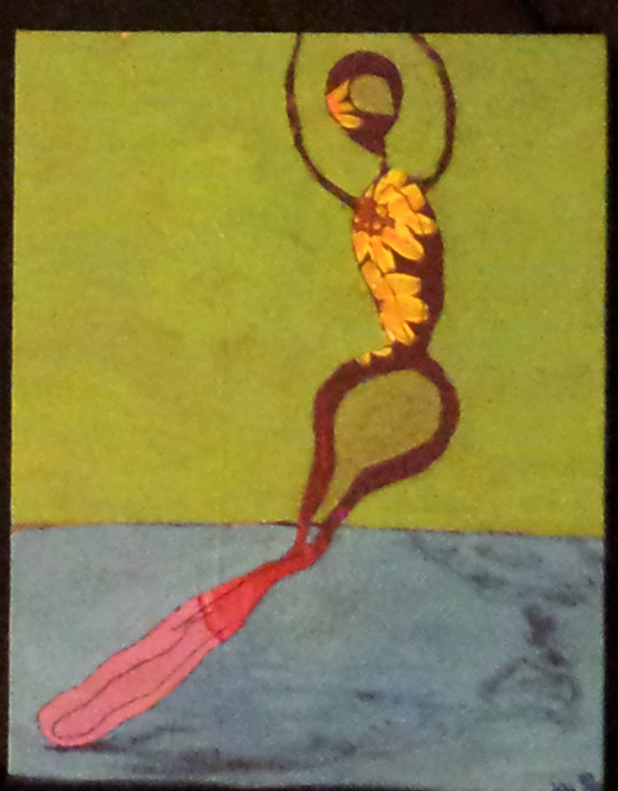

{kind=link}
chalk pastel and charcoal on paper. Aim was to have each half of face look as if it were whole, if the opposite side of face was covered.

acrylic on paper. Color theory study, incorporating snipets from some of the art masters of history.
{kind=link}

{kind=link}
Acrylic on canvas. Recycled art looking at movement.
{kind=link}
YouTube

Audacity file with image.
I took an original art piece and put it through the program Audacity to get the sound produced from the art. Then, using the single noise from the art, I added beat boxing and singing to make a song. The music compilation is repeated 10x.
The sound waves, expanded and compressed have been screen captured and overlayed over the original art work in Photoshop.
YouTube
illustrator and photoshop. After creating a contact sheet of screenshots from a favorite movie, the stills were then used to create a short silent movie. The images were altered with Photoshop, and the stills were stitched together with Ilustrator.

photoshop

photoshop. Overlayed an image of a non traditional Rosie the Riveter, onto an ad from the 1950's when women and especially women of color weren't in the public eye.